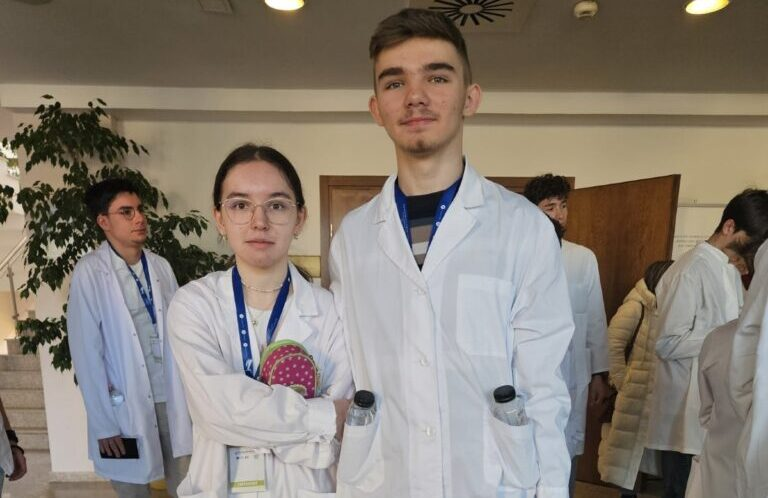
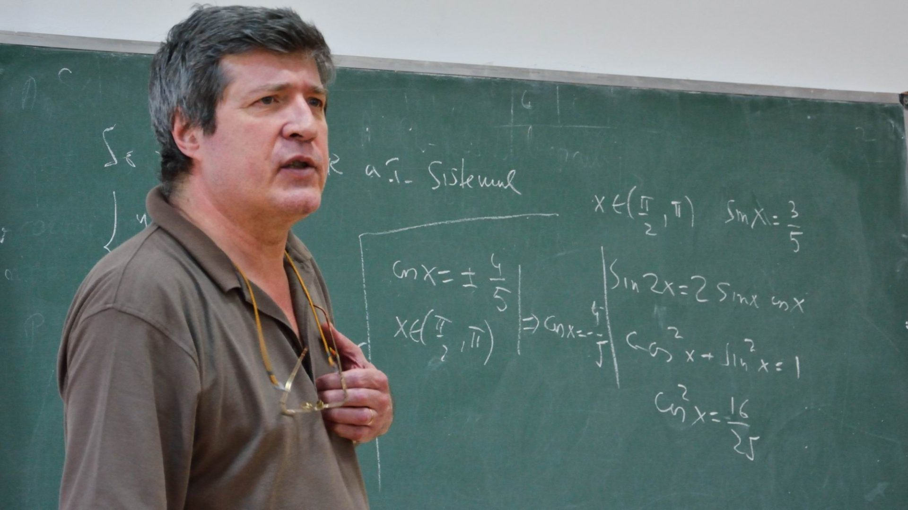
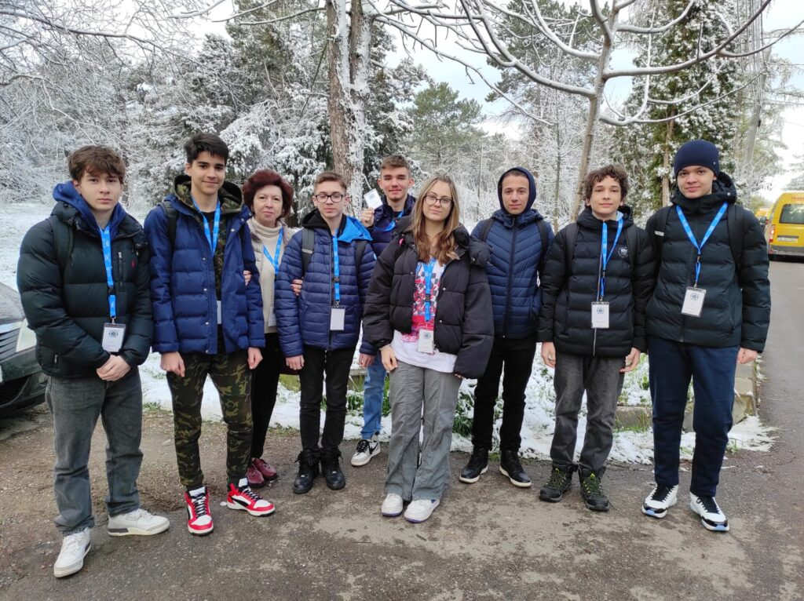
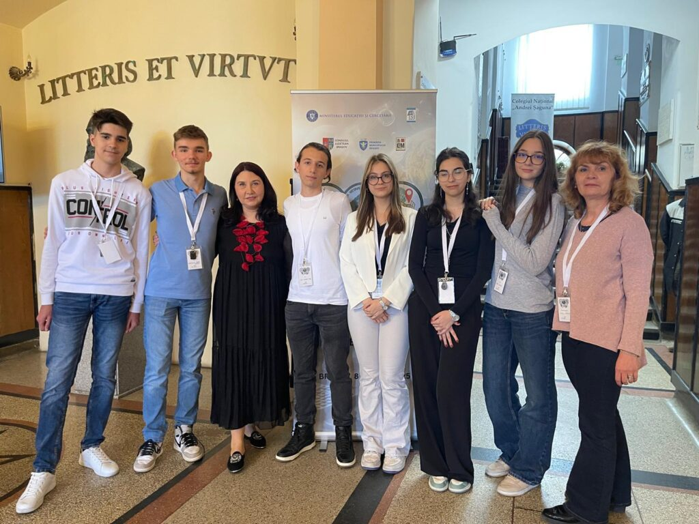

Excelența academică și tradiția performanței la Colegiul Național „Bogdan Petriceicu Hasdeu”
Rareș Răzvan Gheorghe reprezintă un etalon al dedicării și inteligenței în comunitatea hasdeiană. Prin rezultate excepționale obținute la etapele județene și naționale ale olimpiadelor, el a demonstrat că pasiunea îmbinată cu o muncă riguloasă și constantă poate conduce către cele mai înalte culmi ale succesului academic.
Parcursul său deosebit inspiră generațiile actuale de elevi, dovedind că spiritul de competiție și dorința de autodepășire sunt calități fundamentale cultivate în băncile liceului nostru.

În spatele fiecărui mare olimpic se află un mentor deosebit, iar domnul profesor Bogdan Enescu este recunoscut la nivel național și internațional pentru dedicarea sa în pregătirea minților sclipitoare. Cu o carieră marcată de dragostea pentru matematică, domnul profesor a ghidat nenumărate generații de hasdeeni spre medalii și performanțe de top.

Anii școlari 2025 și 2026 au continuat tradiția glorioasă a colegiului, înregistrând participări numeroase și rezultate remarcabile la o gamă largă de discipline, de la științe exacte până la profilele umaniste.

